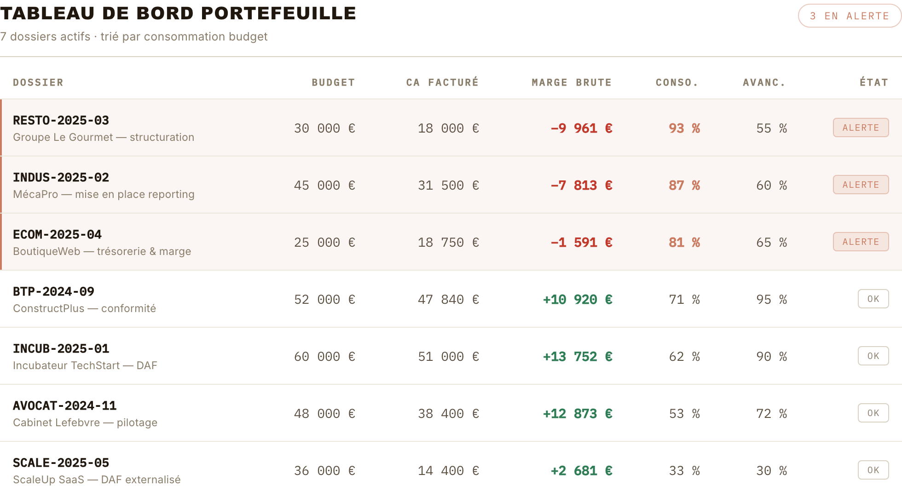
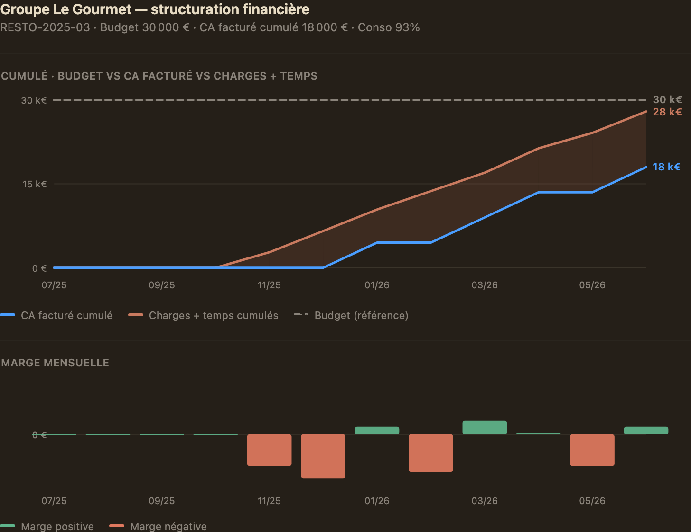
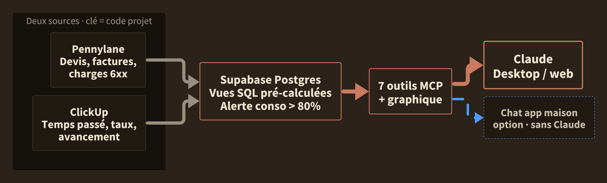
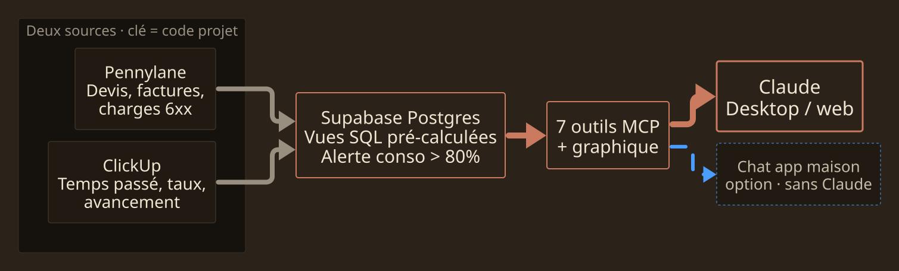
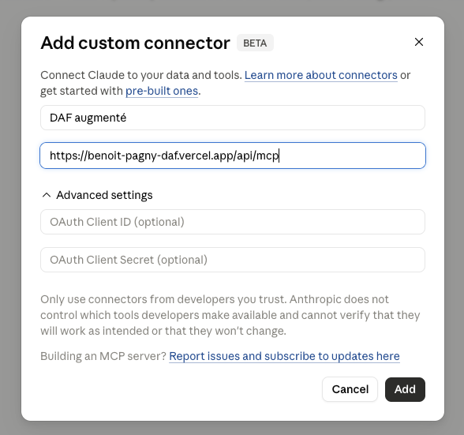
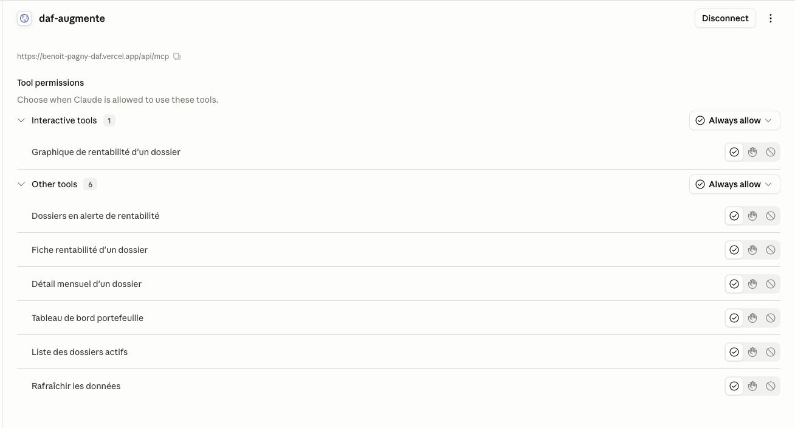

DAF augmenté · Démo
Suite à notre échange. J'ai construit ton agent de suivi de rentabilité par dossier. Un serveur live, branché à Claude.
Pour Benoit Pagny · Juin 2026 · Confidentiel
Ce que tu m'as demandé
Le besoin
La contrainte
Ce que j'ai construit
Tout pré-calculé en SQL
Les métriques sont calculées dans la base, en SQL. L'agent ne calcule rien, il met en forme. Résultat : réponse en secondes, et zéro hallucination sur les chiffres.
Sept outils, un graphique
Tableau de bord portefeuille, fiche d'un dossier, détail mensuel, dossiers en alerte. Et un graphique de rentabilité qui s'affiche directement dans la conversation.
En langage naturel
Tu poses ta question comme tu la penses : « quels dossiers sont en alerte ? ». La réponse arrive en français, format DAF, prête à décider.
Démo · ce que ça donne
Données de démo. 7 dossiers actifs, 3 en alerte. RESTO-2025-03 brûle son budget : les charges et le temps passé ont déjà dépassé le CA facturé, la marge est négative.
Tableau de bord · vue portefeuille

Graphique · RESTO-2025-03 (marge négative)

Architecture
Pennylane et ClickUp alimentent Supabase. Tout est pré-calculé en vues SQL, l'agent ne fait que lire. Stack : Next.js + Vercel + Supabase Postgres.


Deux façons de l'utiliser
Option A · Dans Claude (MCP)
Option B · Chat dans une app
Installer · 1 / 2
Dans Claude, ouvre Réglages → Connecteurs (Desktop ou web).
Clique « Ajouter un connecteur personnalisé ».
Donne-lui un nom simple, sans accent ni espace (ex. daf-augmente), puis colle l'URL du serveur (ci-dessous).
Valide avec Add. Pas d'authentification : c'est la version de test.
Ajouter un connecteur personnalisé

URL du serveur MCP · à coller dans Claude
https://benoit-pagny-daf.vercel.app/api/mcpInstaller · 2 / 2
Une fois le connecteur ajouté, autorise les outils (Always allow). C'est tout. Tu peux poser tes questions en langage naturel.
Permissions · une fois connecté

« Quels dossiers sont en alerte de rentabilité ? »
« Donne-moi la rentabilité du dossier INCUB-2025-01. »
« Montre-moi le graphique du dossier RESTO-2025-03. »
Pour creuser
Branche le connecteur, pose tes questions, vois si le format DAF colle à ce que tu as en tête. On en discute de vive voix quand tu veux.
Préparé pour Benoit Pagny · Confidentiel · Juin 2026